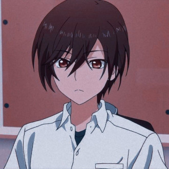
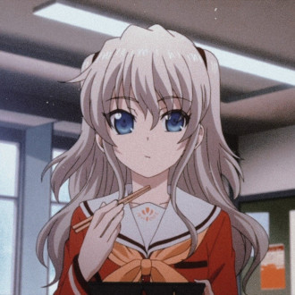

-
Yuu Otosaka
Descrição
Yuu possui a habilidade "Pilhagem", que lhe permite controlar o corpo de alguém por cerca de 5 segundos e roubar sua habilidade. Ele usa essa habilidade para memorizar respostas de exames roubando habilidades de alunos brilhantes. Vantagens: Pode usar as habilidades dos outros enquanto os controla. Não há limite para o número de habilidades que pode roubar. Desvantagens: Seu corpo fica vulnerável enquanto controla outra pessoa. Ele sente a dor infligida ao hospedeiro. Com cada habilidade roubada, ele perde memórias, identidade e sanidade. Ele retém as desvantagens e limitações das habilidades roubadas. A habilidade pode ter um impacto mental significativo, tornando-o instável.
-
Nao Tomori
Descrição
Nao é uma estudante trabalhadora e inteligente, mas também narcisista, hipócrita e temperamental. Ela não tolera pessoas que não reconhecem seus esforços. Apesar de suas falhas, ela é ousada, direta e adora comer. Relacionamentos: Confia profundamente em Shunsuke e, eventualmente, em Yuu. Sente-se culpada pela morte de sua irmã mais nova, Ayumi. Gosta de crianças e tenta ajudar Yuu a superar sua depressão. Personalidade: Pode ser agressiva com aqueles que considera imperdoáveis. Sua habilidade influenciou a personalidade de Yuu. Ela se tornou uma grande influência na vida de Yuu, ajudando-o a se recuperar da depressão. Tomori possui a habilidade de desaparecer do campo de visão de uma pessoa específica de cada vez. No entanto, ela não fica invisível, pois ainda pode ser detectada por outras pessoas que não sejam o alvo de sua habilidade. Limitações: Ela só pode afetar uma pessoa por vez. Sua habilidade foi roubada por Yuu após o arco "Promise".
-
Ayumi Otosaka

Descrição
Ayumi possui a habilidade de "colapso", que lhe permite fazer objetos ao seu redor desmoronarem e quebrarem. Sua habilidade não deve ser confundida com o poder de gerar terremotos, pois ela não pode emitir tremores no solo. Seu cabelo brilha antes de ela ativar sua habilidade. Uso da habilidade: Ela usou sua habilidade pela primeira vez para impedir que um colega de classe a machucasse com um estilete. No entanto, isso fez com que todo o prédio desabasse sobre ela, levando à sua morte. Yuu Otosaka também foi pego no colapso enquanto tentava salvá-la, mas sobreviveu. Eventos posteriores: Em "Plunder", Ayumi é resgatada por Yuu usando sua nova habilidade, Time Leap. Yuu agora possui a habilidade de Ayumi porque ele a saqueou dela.
-
Jōjirō Takajō

Descrição
Jōjirō não tem controle total sobre sua habilidade. Ele geralmente tem problemas para parar em seu destino planejado e acaba colidindo com objetos, resultando em ferimentos e danos ao ambiente. Para se proteger, ele usa roupas protetoras e mantém seu corpo em forma.
-
Yusa Kurobane

Descrição
Yusa possui a habilidade de Espiritismo, que lhe permite canalizar e conversar com os mortos. Se o espírito que a possui tiver poderes especiais, ele pode usá-los através de seu corpo. Limitações: A habilidade é incompleta, e Yusa frequentemente canaliza espíritos incontrolavelmente. Quando um espírito a possui, sua aparência muda (seus olhos ficam vermelhos) e ela perde as memórias do que aconteceu enquanto estava possuída. Eventos posteriores: Yusa perdeu sua habilidade de Espiritismo após voluntariamente dar seus poderes a Yuu Otosaka através de sua habilidade de Saque. Isso permitiu que ela finalmente aprendesse sobre sua habilidade graças à carta de sua irmã, Misa.